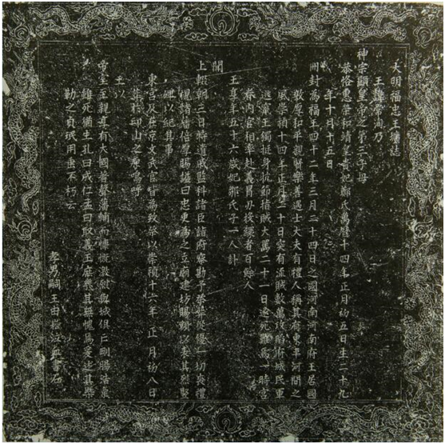

| 吴伟业 > 鹿樵纪闻 | 上页 下页 |
| 附录：大明福忠王圹志 |
|
|
|
（胡案：此网上流传福王朱常洵墓志。姑附于此。） 王讳常洵，乃神宗显皇帝之第三子。母恭恪惠荣和靖皇贵妃郑氏。万历十四年正月初五日生，二十九年十月十五日册封为福王；四十二年三月二十四日之国河南河南府。 王居国，敦厚和平，亲贤乐善，遇士大夫有礼，人称其有东平河间之风。 崇祯十四年正月二十日，突有流贼数万攻陷府城，民军逃窜，王独挺身抗节，指贼大骂。二十一日遂死难焉。一时宫眷内官相率赴义，冒刃投缳者百余人。 王享年五十六岁。 妃邹氏。 子一人。 讣闻，上辍朝三日，特遣戚监科诸臣，诣府察勘，予祭葬从优，一切丧礼视诸藩倍厚赐，谥曰“忠”，更为之立庙、建坊、赐额，以表其烈，竖碑以纪其事。东宫及在京文武官皆为致祭。 以崇祯十六年正月初八日葬于邙山之原。 呜呼！王以帝室至亲，享有大国，著声藩辅，而慷慨激烈，与城俱亡。刚肠浩气，虽死犹生。孔曰成仁，孟曰取义。王庶几其无愧焉！爰述其概，勒之贞珉，用垂不朽云。 孝男嗣王由崧泣血书石。 【注】 明福忠王圹志，1924年孟津县麻屯乡庙槐村出土，1986年4月，孟津县文管会征集。现藏孟津县文管会。志石高79、宽79、厚10厘米。志文楷书21行，满行25字，撰文者为朱常洵之子朱由崧。盖为录顶，篆书“明福忠王圹志”。  ▲大明福忠王圹志（拓片） |
| 上一页 回目录 回首页 下一页 |